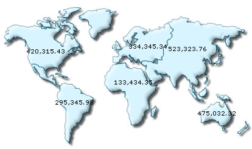
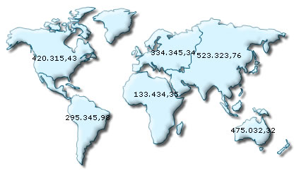

| Using formatted input numbers |
|
In some countries, commas are used as decimal separators and dots as thousand separators. But, if you directly specify such numbers in FusionMaps XT XML, it will give an error while converting to number. FusionMaps XT introduces a smart way to let you specify numbers in your own format in XML. Consider the XML/JSON below: |
<map fillColor="D7F4FF" includeValueInLabels="1" baseFontSize="9" showBevel="0" inThousandSeparator="." inDecimalSeparator=","> <data> <entity id="NA" value="515"/> <entity id="SA" value="373"/> <entity id="AS" value="3875"/> <entity id="EU" value="727"/> <entity id="AF" value="885"/> <entity id="AU" value="32"/> </data> </map> {
"map": {
"fillcolor": "D7F4FF",
"includevalueinlabels": "1",
"basefontsize": "9",
"showbevel": "0"
"inthousandseparator": ".",
"indecimalseparator": ","
},
"data": [
{"id": "NA", "value": "515" },
{"id": "SA", "value": "373" },
{"id": "AS", "value": "3875" },
{"id": "EU", "value": "727" },
{"id": "AF", "value": "885" },
{"id": "AU", "value": "32" }
]
}
|
|
In this XML/JSON, we're providing the numbers in the non-standard convention - i.e., we've used dot as the thousand separator and comma as the decimal separator (as followed in some European countries). Now, to make sure that FusionMaps XT reads these numbers in the right way, we convey our input decimal and thousand separator characters as under: <map ... inThousandSeparator='.' inDecimalSeparator=',' ...> "map":{
...
This tells FusionMaps XT that it should treat dot in the input numbers as thousands (instead of normal decimals) and comma as decimals. When you now view this map, you'll get the following output: |
|  |
| You can see that FusionMaps XT has interpreted the numbers properly and automatically converted the numbers into the standard format. If you want to output the numbers again in the non-conventional format, you can use the following XML: |
<map fillColor="D7F4FF" includeValueInLabels="1" baseFontSize="9" showBevel="0" inThousandSeparator="." inDecimalSeparator="," thousandSeparator="." decimalSeparator="," formatNumberScale="0"> {
"map": {
"fillColor": "D7F4FF",
"includeValueInLabels": "1",
"baseFontSize": "9",
"showBevel": "0",
"inthousandseparator": ".",
"indecimalseparator": ",",
"thousandseparator": ".",
"decimalseparator": ",",
"formatnumberscale": "0"
},
"data": [
{"id": "NA", "value": "515" },
{"id": "SA", "value": "373" },
{"id": "AS", "value": "3875" },
{"id": "EU", "value": "727" },
{"id": "AF", "value": "885" },
{"id": "AU", "value": "32" }
]
}
|
| You will get the following map: |
|  |
| Notice how . is used for thousand separator and , for decimal separator. |